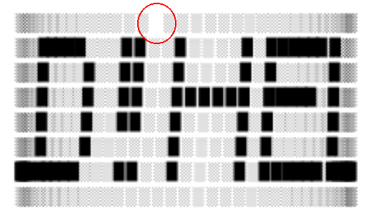

In this third part I make my own dweet based on p01's original idea.
After studying Henri's code, I decided to change it to become some kind of rotating LED display that shows some message.
Here's my initial code, before any golfing:
const d = "帀^㰀䉂䉂~䁀䁀繀䰀ሲሒ~䈼䉂㱂縀ဠ‐~㰀䉂䉂<䁀䁀繀䀀䁀䁀~䩂䩊繊縀ࠈࠈ~";
const w = c.width = 1920 >> 3;
// uncomment to get cool colors
// x.fillStyle = "#000";
// x.fillRect(0, 0, c.width, c.height);
// x.fillStyle = "#0f0";
const nc=76;
for(let i=0;i<8*nc;i++) {
const ix=i/8|0;
const a=(ix/nc)*(Math.PI*2);
if (C(t+a)>0) continue;
const px=w/2-5+S(t+a)*100;
const iy=i%8;
const py=20+iy*15;
const ci = d.charCodeAt(i/16) >> i % 16 & 1;
const ch = "░▉"[ci];
x.fillText(ch, px, py);
}
Let's start breaking it into parts. First, there's the data string containing the message to be shown. I'm using the same technique described here to compress the message into an array of bits.
To make the banner I used this online app:
# # ###### # # #### # # #### ##### # ##### ## # # # # # # # # # # # # # # # # ## ###### ##### # # # # # # # # # # # # # ## # # # # # # # # ## # # # ##### # # # ## # # # # # # # ## ## # # # # # # # # # ###### ###### ###### #### # # #### # # ###### ##### ##
Then I basically got each column of the message and stuffed into one half of a UTF-16 character, bit by bit. Those letters are 6 chars tall, so 1 byte is enough to store a column and we even get 2 extra bits to spare. The message above uses 75 columns. I round it to the next even and, since each UTF-16 character holds 2 columns, I end up with a 38-char data string. Check this page's source code to see how I implemented it. The resulting data is:
Next, we have a line setting canvas width. It serves both to set a specific width, but also to clear the canvas. It's a well-known hack that does the same as `x.clearRect(0,0,c.width,c.height), but with less characters. Here I'm using one eighth of the original canvas width, hence the `>> 3` part:
const w = c.width = 1920 >> 3;
Then comes the for loop. We'll loop as many times as there are bits in the message (76 columns, each with 8 points):
const nc=76;
for(let i=0;i<8*nc;i++) {
Now I find out the index of the current column. I do that by performing in integer division by 8, giving me a number between 0 and 75:
const ix=i/8|0;
Then I get the current angle of that column with the respect of the rotation of the display:
const a=(ix/nc)*(Math.PI*2);
By doing (ix/nc) I map column index to a value in the range [0..1[ and then I multiply it by 2 PI.
Next I do something similar with what Henri did on his code:
if (C(t+a)>0) continue;
The difference now is that I cull positive cosines. That has the illusion that the cylinder is rotating clockwise. See, Henri made it rotate counter-clockwise, correctly following the Earth rotation. In my case, however, I want the message to come from right to left, so that's why I needed to invert it.
Now it's time to calculate the x coordinate of the point. Again, this is very similar to what Henri did:
const px = w/2-5 + S(t+a) * 100;
I start by adding some constant to center everything horizontally, then I rotate a constant (100) around the y axis to transform a segment into a cylinder.
The y coordinate is even simpler:
const iy=i%8; const py=20+iy*15;
I get the remainder of i/8 to serve as my bit index. Bit 0 draws a point in the first row, bit 1 on the second row, and so on, until bit 7 at the bottom row. To calculate py I start by adding a constant that serves as a top margin, then each point gets shifted 15 pixels down times it bit index.
Now, for querying the data:
const ci = d.charCodeAt(i/16) >> i % 16 & 1; const ch = "░▉"[ci]; x.fillText(ch, px, py);
We get the UTF-16 character at position i/16, then we use the remainder of this division to fetch the correct bit. We shift it by that amount and then AND it with 1, to isolate it. The resulting character index (ci) is used to know which block character we'll print to the canvas. Then we finally call fillText() to print it. Phew!
Now it's time to get it messier than it already is. This is my initial code:
const d = "帀^㰀䉂䉂~䁀䁀繀䰀ሲሒ~䈼䉂㱂縀ဠ‐~㰀䉂䉂<䁀䁀繀䀀䁀䁀~䩂䩊繊縀ࠈࠈ~";
const w = c.width = 1920 >> 3;
const nc=76;
for(let i=0;i<8*nc;i++) {
const ix=i/8|0;
const a=(ix/nc)*(Math.PI*2);
if (C(t+a)>0) continue;
const px=w/2-5+S(t+a)*100;
const iy=i%8;
const py=20+iy*15;
const ci = d.charCodeAt(i/16) >> i % 16 & 1;
const ch = "░▉"[ci];
x.fillText(ch, px, py);
}
It's 378 chars long, but we don't need consts and lets:
d = "帀^㰀䉂䉂~䁀䁀繀䰀ሲሒ~䈼䉂㱂縀ဠ‐~㰀䉂䉂<䁀䁀繀䀀䁀䁀~䩂䩊繊縀ࠈࠈ~";
w = c.width = 1920 >> 3;
nc=76;
for(i=0;i<8*nc;i++) {
ix=i/8|0;
a=(ix/nc)*(Math.PI*2);
if (C(t+a)>0) continue;
px=w/2-5+S(t+a)*100;
iy=i%8;
py=20+iy*15;
ci = d.charCodeAt(i/16) >> i % 16 & 1;
ch = "░▉"[ci];
x.fillText(ch, px, py);
}
Down to 278 chars. Cut some variables:
d = "帀^㰀䉂䉂~䁀䁀繀䰀ሲሒ~䈼䉂㱂縀ဠ‐~㰀䉂䉂<䁀䁀繀䀀䁀䁀~䩂䩊繊縀ࠈࠈ~";
w = c.width = 240;
nc=76;
for(i=0;i<8*nc;i++) {
a=i/8/nc*Math.PI*2;
if (C(t+a)>0) continue;
x.fillText("░▉"[d.charCodeAt(i/16) >> i % 16 & 1], w/2-5+S(t+a)*100, 20+i%8*15);
}
220 chars. Here something interesting happened. I decided to remove the truncation hack (|0) from the column index calculation (ix) and a the display got tilted to the right. I kinda liked it, because it saves me two characters and the final result is interesting, so I'm keeping it, at least for now. Moving on. Let's end with the for block and turn everything into a single statement:
d = "帀^㰀䉂䉂~䁀䁀繀䰀ሲሒ~䈼䉂㱂縀ဠ‐~㰀䉂䉂<䁀䁀繀䀀䁀䁀~䩂䩊繊縀ࠈࠈ~";
w = c.width = 240;
nc=76;
for(i=0;i<8*nc;i++)
(a=i/8/nc*Math.PI*2) &&
C(t+a)<0 &&
x.fillText("░▉"[d.charCodeAt(i/16) >> i % 16 & 1], w/2-5+S(t+a)*100, 20+i%8*15)
207 chars. Move the data inside, remove some spaces:
w=c.width=240;
nc=76;
for(i=0;i<8*nc;i++)
(a=i/8/nc*Math.PI*2) &&
C(t+a)<0 &&
x.fillText("░▉"["帀^㰀䉂䉂~䁀䁀繀䰀ሲሒ~䈼䉂㱂縀ဠ‐~㰀䉂䉂<䁀䁀繀䀀䁀䁀~䩂䩊繊縀ࠈࠈ~".charCodeAt(i/16)>>i%16&1],w/2-5+S(t+a)*100,20+i%8*15)
188 chars.
w=c.width=240
for(i=0;i<608;i++)
(a=i/8/76*Math.PI*2)&&
C(t+a)<0&&
x.fillText("░▉"["帀^㰀䉂䉂~䁀䁀繀䰀ሲሒ~䈼䉂㱂縀ဠ‐~㰀䉂䉂<䁀䁀繀䀀䁀䁀~䩂䩊繊縀ࠈࠈ~".charCodeAt(i/16)>>i%16&1],w/2-5+S(t+a)*100,20+i%8*15)
Getting rid of nc, some spaces and a semicolon I forgot. 177 chars.
w=c.width=240
for(i=608;i--;)
(a=i/8/76*Math.PI*2)&&
C(t+a)<0&&
x.fillText("░▉"["帀^㰀䉂䉂~䁀䁀繀䰀ሲሒ~䈼䉂㱂縀ဠ‐~㰀䉂䉂<䁀䁀繀䀀䁀䁀~䩂䩊繊縀ࠈࠈ~".charCodeAt(i/16)>>i%16&1],w/2-5+S(t+a)*100,20+i%8*15)
Shorten for loop by merging condition and increment parts and counting down instead of up. 174 chars.
c.width=240
for(i=608;i--;)
(a=i/8/76*Math.PI*2)&&
C(t+a)<0&&
x.fillText("░▉"["帀^㰀䉂䉂~䁀䁀繀䰀ሲሒ~䈼䉂㱂縀ဠ‐~㰀䉂䉂<䁀䁀繀䀀䁀䁀~䩂䩊繊縀ࠈࠈ~".charCodeAt(i/16)>>i%16&1],115+S(t+a)*100,20+i%8*15)
Got rid of w: 170 chars. I noticed there's a hole in the display, though. It appeared when I changed the for loop to count down. Position zero is never draw because the for now stops as soon as i === 0. Here's the hole:
To fix it, I just changed 608 to 609. Since that position is an empty space, that's fine. 609 will map outside of the string, returning a NaN. Not a problem, though, because the shift right operation will transform it to zero and everything will be fine. I learned this by finding the bug I mention in the appendix section here. 170 chars, 30 to go.
c.width=240
for(i=609;i--;)C(t+(a=i/8/76*Math.PI*2))<0&&x.fillText("░▉"["帀^㰀䉂䉂~䁀䁀繀䰀ሲሒ~䈼䉂㱂縀ဠ‐~㰀䉂䉂<䁀䁀繀䀀䁀䁀~䩂䩊繊縀ࠈࠈ~".charCodeAt(i/16)>>i%16&1],115+S(t+a)*100,20+i%8*15)
Now moved variable a inside the cosine function and got rid of some line breaks, down to 164 chars.
for(i=609,c.width=240;a=i/8/76*Math.PI*2,i--;)C(t+a)<0&&x.fillText("░▉"["帀^㰀䉂䉂~䁀䁀繀䰀ሲሒ~䈼䉂㱂縀ဠ‐~㰀䉂䉂<䁀䁀繀䀀䁀䁀~䩂䩊繊縀ࠈࠈ~".charCodeAt(i/16)>>i%16&1],115+S(t+a)*100,20+i%8*15)
Rearranged it to become a one-liner, but still with 164 chars.
for(i=608,c.width=240;a=i/8/76*6.28,i--;)C(t+a)<0&&x.fillText("░▉"["帀^㰀䉂䉂~䁀䁀繀䰀ሲሒ~䈼䉂㱂縀ဠ‐~㰀䉂䉂<䁀䁀繀䀀䁀䁀~䩂䩊繊縀ࠈࠈ~".charCodeAt(i/16)>>i%16&1],115+S(t+a)*100,20+i%8*15)
Replaced Math.PI * 2 with 6.28, down to 159 chars. I also noticed that something is causing the first point to be drawn twice. I'm not sure what happened and I don't want to stop now, but it means that my hack is not needed anymore, so i starts with 608 again. 159 chars, 19 to go. I need to attack the angle computation:
a=i/8/76*6.28
This is screaming for help. To divide by 8 and then by 76 is the same as dividing by 608, our initial value:
for(i=I=608,c.width=240;a=i/I*6.28,i--;)
158. We can also pre-sum t into a and avoid the sum occurring twice (for cosine and then sine):
for(i=I=608,c.width=240;a=t+i/I*6.28,i--;)C(a)<0&&x.fillText("░▉"["帀^㰀䉂䉂~䁀䁀繀䰀ሲሒ~䈼䉂㱂縀ဠ‐~㰀䉂䉂<䁀䁀繀䀀䁀䁀~䩂䩊繊縀ࠈࠈ~".charCodeAt(i/16)>>i%16&1],115+S(a)*100,20+i%8*15)
156. By shrinking the canvas a bit, I got rid of some digits in decimal numbers:
for(i=I=608,c.width=180;a=t+i/I*6.28,i--;)C(a)<0&&x.fillText("░▉"["帀^㰀䉂䉂~䁀䁀繀䰀ሲሒ~䈼䉂㱂縀ဠ‐~㰀䉂䉂<䁀䁀繀䀀䁀䁀~䩂䩊繊縀ࠈࠈ~".charCodeAt(i/16)>>i%16&1],85+S(a)*75,9+i%8*13)
153 chars, 13 to go. This is getting hard. I believe I still can manage to replace I*6.28 with some pre-baked number, but I'm still far from removing 13 chars. I think I chose a message that is too big. 76 columns are just too much information.
Things to try: